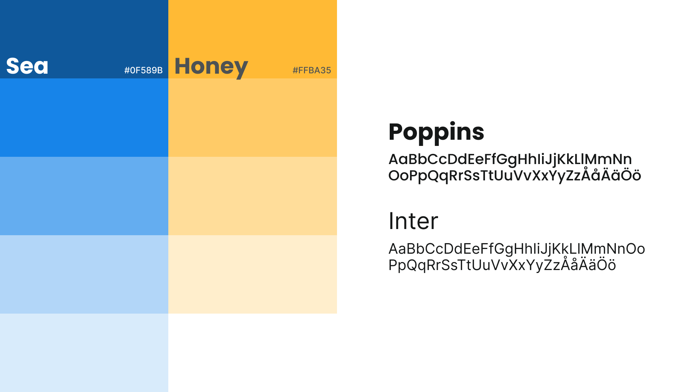
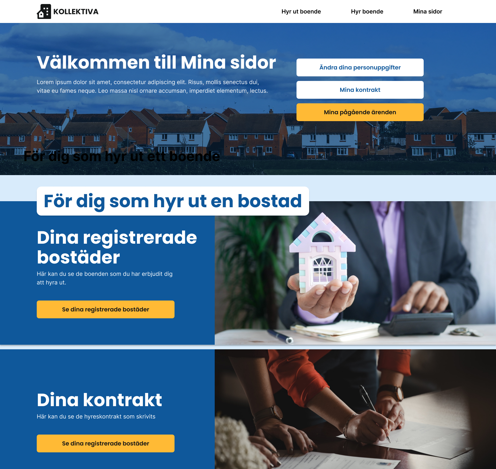

2022
Figma
Samuel Thalin
Klara Genberg
Kollektiva is a service that lets elderly citizens of Sweden rent out their houses. The service can be utilized when the elderly person wishes to move to an apartment or a retirement home, without having to sell their current residence.
The aim is to increase the mobility in the housing market and help the elderly to move, without demanding them to sell their houses.
The mission in this project was to develop a website from scratch for this service. Seeing that the main target group are elderly users, with varying trust and skills when it comes to technology, it was extra important to create a visually clear design that guides the user and makes them feel safe.
A stylesheet with contrasting colors and fonts with high readability was developed. A blue primary color was chosen to provide the elderly users with a sense of calm and reliability. The contrasting, yellow color is used on blue background for Call to Action-buttons, to catch the users attention in order to help guide them on the website.
